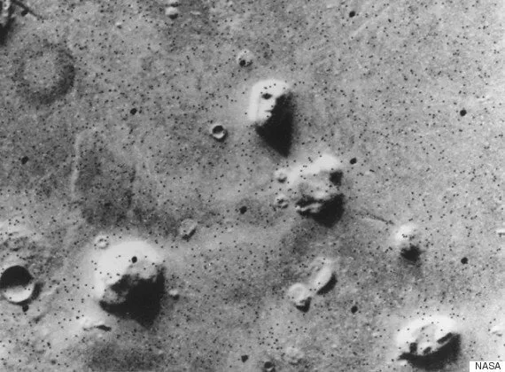
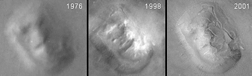
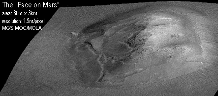

ရိုက်ကူးထားတဲ့ ပုံတွေကို ကမ္ဘာပေါ်က နာဆာ သိပ္ပံပညာရှင်တွေ ပြန်စစ်ကြည့်ချိန်မှာတော့ ဘယ်လိုမှ ထင်မှတ်မထားတဲ့ ဓါတ်ပုံတစ်ပုံက အားလုံးကို အံ့အားသင့် သွားစေခဲ့ပါတယ်။
ဒီဓါတ်ပုံ ထဲမှာ တွေ့ရတာကတော့ ဗွိုင်ယေဂျာရဲ့ ကင်မရာကို မျက်လုံးကြီး ပြူးပြီးစိုက်ကြည့်နေတဲ့ ဧရာမ လူ့မျက်နှာကြီးပဲ ဖြစ်ပါတယ်။
ဒီမျက်နှာကြီးကို အင်္ဂါဂြိုလ် ပေါ်က ဆိုင်ဒိုးနီးယား (Cydonia) ဒေသမှာ တွေ့ရှိခဲ့တာ ဖြစ်ပါတယ်။ မျက်နှာကြီးဟာ အကျယ်အဝန်းအားဖြင့် နှစ်မိုင်ခန့် ကျယ်ဝန်းပါတယ်။ ဒီဓါတ်ပုံ တွေ့ရှိရပြီးနောက် နာဆာက ပညာရှင်တွေ အကြားမှ အတော်လေး လှုပ်ခတ်သွားကြပါတယ်။

ဒီမျက်နှာပုံ ပါတဲ့ ဓါတ်ပုံကို နာဆာက ထုတ်ပြန်ခဲ့ပြီးတဲ့ အချိန်ကစလို့ ဒီဓါတ်ပုံဟာ လူထုကြားမှာ အထူးပဲ ရေပန်းစားခဲ့ပါတယ်။ သတင်းစာတွေ၊ ရေဒီယိုတွေ၊ တီဗီတွေကနေ ဒီမျက်နှာနဲ့ ပါတ်သက်တဲ့ မှတ်ချက်တွေ သုံးသပ်ချက်တွေ ပေးကြပါတယ်။ ဟောလီးဝုတ် ကလဲ ရုပ်ရှင်ကားတွေ ရိုက်ကူးခဲ့ ကြပါတယ်။
လူအချို့ကလဲ ဒါဟာ အင်္ဂါဂြိုလ်ပေါ်မှာ သက်ရှိတွေ ရှိနေတယ် ဆိုတဲ့ ခိုင်လုံတဲ့ သက်သေဖြစ်တယ်လို့ ယူဆကြပါတယ်။
နာဆာအဖွဲ့ကြီးက ဘတ်ဂျက်တွက်တဲ့ ဌာနက ဝန်ထမ်းတွေကတောင် အင်္ဂါဂြိုလ်ပေါ်မှာ အဆင့်မြင့်တဲ့ ရှေးဟောင်း သက်ရှိ မျိုးနွယ်တွေ ရှိဖို့ ဆုတောင်းခဲ့ ကြတယ်လို့ ဆိုပါတယ်။
သိပ္ပံပညာရှင် အများစုကတော့ ဒီ အင်္ဂါဂြိုလ်က မျက်နှာကြီးဟာ တခြားကမ္ဘာက သက်ရှိတွေ ထားရစ်ခဲ့တဲ့ ရှေးဟောင်းယဉ်ကျေးမှု အမွေအနှစ် ဖြစ်တယ်လို့ မယုံကြည် ကြပါဘူး။ ဒါပေမယ့်လဲ ၁၉၉၇ ခုနှစ် စက်တင်ဘာလမှာ နာဆာက လွှတ်တင်တဲ့ Mars Global Surveyer ယာဉ် အင်္ဂါဂြိုလ်ကို ရောက်သွားတဲ့ အချိန်ကျတော့ ဒီ ဆီဒိုးနီးယား ဒေသိကို ပထမဆုံး သွားပြီး ဓါတ်ပုံ ရိုက်ခဲ့ပါတယ်။
ဒီဒေသ ကိုရိုက်ရတဲ့ အဓိက အကြောင်းရင်းကတော့ ဗွိုင်ရေဂျာ-၁ ယာဉ် လွန်ခဲ့တဲ့ ၁၈ နှစ်က ရိုက်ကူးခဲ့တဲ့ မျက်နှာကြီးကို သေသေချာချာ ပြန် ဓါတ်ပုံ ရိုက်ချင်လို့ ဖြစ်ပါတယ်။

ဒါပေမယ့် ဓါတ်ပုံ ထွက်လာတဲ့ အချိန်ကျတော့ မျက်နှာကြီး ပြန်မပေါ်လာပဲ သာမန် ကုန်းမြေမြင့် တစ်ခုသာ ဖြစ်နေတာကို တွေ့ရှိကြရ ပါတယ်။ ဘာ အခြားကမ္ဘာက သက်ရှိ ဂြိုလ်သားတွေရဲ့ ရှေးဟောင်းအဆောက်အဦမှ မတွေ့ရပါဘူး။
ဒါပေမယ့်လဲ အားလုံးကတော့ ဒီအဖြေကို လက်မခံကြ သေးပါဘူး။ ဒီ မျက်နှာကြီး ရှိတဲ့ နေရာဟာ အင်္ဂါဂြိုလ်ရဲ့ မြောက်ဖက်ခြမ်းမှာ ဖြစ်ပြီး လေ့လာရေးယာဉ် ဓါတ်ပုံ ရိုက်ကူးခဲ့တဲ့ အချိမ် ဧပြီလဟာ အင်္ဂါဂြိုလ်ပေါ်မှာ ဆောင်းရာသီ ကျရောက်နေချိန် ဖြစ်နေပါတယ်။ ရာသီဥတုကလဲ တိမ်ဖုံးနေတဲ့ ရာသီဥတု ဖြစ်တာမို့ ဓါတ်ပုံဟာ တိမ်ပါးပါးလေး တွေကြားကနေ ဖြတ်ပြီး ရိုက်ကူးခဲ့တာပါ။
ဒါကြောင့်မို့လို့ နာဆာရဲ့ အင်္ဂါဂြိုလ် လေ့လာရေးယာဉ်ဟာ ၂၀၀၁ ခုနှစ် ဧပြီလမှာ မျက်နှာကြီး တွေ့ရှိခဲ့ရာ ဆိုင်ဒိုးနီးယား ဒေသပေါ်ကနေ ထပ်မံပြီး နောက်တစ်ကြိမ် ပျံသန်းခဲ့ပါတယ်။ ဒီတစ်ကြိမ် မှာတော့ တိမ်ကင်းစင်နေတဲ့ အချိန်မို့ ကြည်လင်ပြတ်သားတဲ့ ဓါတ်ပုံတွေ ရိုက်ကူးရရှိ ခဲ့ပါတယ်။
ဒီတစ်ကြိမ်မှာတော့ ဘယ်လိုမှ အငြင်းပွားစရာ မရှိတော့ပါဘူး။ အင်္ဂါဂြိုလ်ပေါ်က နှစ်ပေါင်း ၂၅ နှစ်တိုင်အောင် လူတွေရဲ့ အာရုံကို ဖမ်းစားခဲ့တဲ့ မျက်နှာကြီးဟာ တကယ်တော့ သာမန် ကုန်းပြင်မြင့် တစ်ခုသာ ဖြစ်တယ်ဆိုတာကို ဘယ်သူမှ မငြင်းနိုင် တော့ပါဘူး။
နောက်ပိုင်း လေဆာရောင်ခြည် တိုင်းတာရေး ကိရိယာတွေ အသုံးပြုပြီး 3D ကွန်ပြူတာနဲ့ ပြန်ပြီး ပုံဖေါ်လိုက်တဲ့ အခါမှာလဲ မျက်နှာနဲ့ တူတာ ဘာမှ မတွေ့ရှိရပဲ သာမန် ကုန်းပြင်မြင့် တစ်ခု အဖြစ်ပဲ တွေ့ရှိရပါတယ်။ ဘာမျက်လုံး၊ နှာခေါင်း၊ ပါးစပ်မှာ မတွေ့ရှိ ရပါဘူး။ ဒါနဲ့ပဲ သိပ္ပံ စိတ်ကူးယဉ် စာရေးဆရာတွေရဲ့ အိပ်မက်တစ်ခု နိဂုံးချုပ် သွားပါတော့တယ်။
